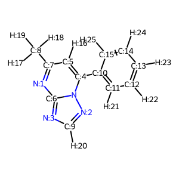

Grafting fragments onto molecules in rdkit - babysteps
This is a quick set-up for attaching a fragment to a molecule on a particular location.
rdkit
3d-editor
Author
Peter Schmidtke
Published
January 23, 2021
Context
In this quick walkthrough I describe the first steps to attach fragments from a fragment library onto a molecule of interest. The main idea here is to prepare code snippets for the integration of all of this into the web-based 3d-editor project I started with Daniel Alvarez some time ago. As I’m learning a lot of new things about rdkit I prefer to write it up here, as I found most of the relevant information in the mailing list & the rdkit documentation.
I wanted to go for something easy for now … so let’s start with a methyl group ;) I made a quick shoutout on twitter on current available 3D fragments that could be helpful to write such a sketcher. Geoff Hutchison (Mr Avogadro) gave me a great hint to this library here. It contains way more fragments than I’d initially considered for this project and the coordinates seem reasonable & compatible with the systems we’ll manage in the 3d-editor.
So I just took the methane from there (for now), ran it through Marvinsketch to replace one of the protons with an R group and then exported the whole thing as mol file (to the best of my knowledge rdkit doesn’t support the chemistry markup language yet).
Preliminary steps
Code
# https://sourceforge.net/p/rdkit/mailman/message/34922663/ procedure extracted from this support requestimport rdkitfrom rdkit import Chemfrom rdkit.Chem.Draw import IPythonConsolefrom rdkit.Chem import DrawIPythonConsole.ipython_useSVG=Truefrom rdkit.Chem import AllChemimport copyfrom rdkit.Chem.rdMolAlign import AlignMol
Below, the molecule we want to add the methyl group to. We’ll attach it on the triazole ring.
As the aim is to integrate that into the 3D-editor, the user ultimately will be able to click on the proton where he wants to place the fragment. Thus, we know which exact atom we want to attach it to. Below I’m determining this showing plain atom indices in the rdkit molecule
suppl = Chem.SDMolSupplier('ligand.sdf',removeHs=False)for mol in suppl: mblock = Chem.MolToMolBlock(mol)for atom in mol.GetAtoms(): atom.SetAtomMapNum(atom.GetIdx())mol2d=copy.deepcopy(mol)AllChem.Compute2DCoords(mol2d) #do this on a copy hereDraw.MolToImage(mol2d, includeAtomNumbers=True)

Next I’m loading the fragment and extract the position of the R-group and the connected atom as atom indices (I’ll need that later). I know this is very limited and ugly for now, but it serves the purpose here & now ;)
def getAttachmentVector(mol):""" for a fragment to add, search for the position of the attachment point and extract the atom id's of the attachment point and the connected atom (currently only single bond supported) mol: fragment passed as rdkit molecule return: tuple (atom indices) """ rindex=-1 rindexNeighbor=-1for atom in mol.GetAtoms():if(atom.GetAtomicNum()==0): rindex=atom.GetIdx() neighbours=atom.GetNeighbors()if(len(neighbours)==1): rindexNeighbor=neighbours[0].GetIdx()else: print("two attachment points not supported yet")returnNonereturn((rindex,rindexNeighbor))fragment=Chem.MolFromMolFile('methyl.mol',removeHs=False)ret=getAttachmentVector(fragment)for atom in mol.GetAtoms(): atom.SetAtomMapNum(atom.GetIdx())if(ret): fragIndex1,fragIndex2=retprint(fragIndex1, fragIndex2)Chem.MolToMolFile(fragment,"molblock.mol")
Now let’s extract also the atom index of the proton, and also the carbon the proton is attached to on the molecule.
queryAtomIndex=20#defined by clicking on an atom in the sketcher -> needs to be a proton right now for graftingatom=mol.GetAtomWithIdx(queryAtomIndex)neighbours=atom.GetNeighbors()if(len(neighbours)==1): rindexNeighbor=neighbours[0].GetIdx()else: print("two attachment points not supported yet")molIndex1=queryAtomIndexmolIndex2=rindexNeighborprint(molIndex1,molIndex2)
20 9
Aligning the fragment onto the molecule
Now I have the bond of the carbon to proton selected in the molecule and the carbon to R-group in my fragment. These bonds can be aligned onto each other to position the 3D-fragment correctly versus the molecule. This can be conveniently done using the AlignMol function available in rdkit.
AlignMol(fragment,mol,atomMap=((fragIndex2,molIndex1),(fragIndex1,molIndex2))) #important to specify the atomMap here, this aligns only the bonds
0.02749767976054038
Code
#the rest is just to display things hereChem.MolToMolFile(mol,"molblock3.mol")Chem.MolToMolFile(fragment,"fragblock3.mol")
As you can see, the fragment gets placed correctly on top of the proton. Now we have however a few overlapping atoms in place. We can use the rdkit edition functions to address this and combine both overlapping molecules now into a final single molecule.
And voilà. Our methyl is nicely placed and oriented. That’s one of the easiest cases and we’ll have to consider torsion angles & protein environment at a later stage as well, but this should provide first basic steps for simple additions like the one done here.